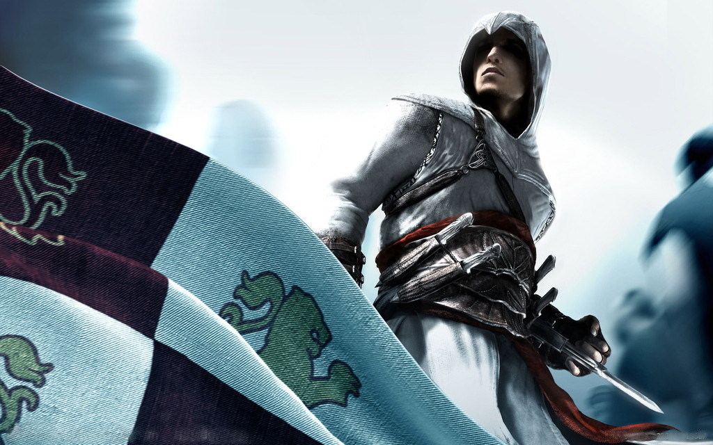
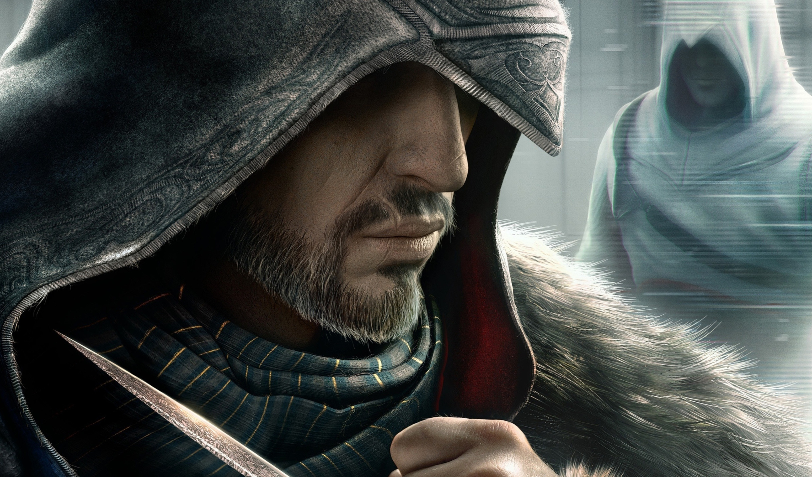

Altaïr Ibn-La'Ahad(阿泰尔•伊本•拉阿哈德)
- 出生日期：1165年1月11日
- 逝世日期：1257年8月12日
- 国籍：叙利亚
- 身高：6英尺
- 体重：170磅
中世纪时期的叙利亚刺客。1191年至他去世，他一直担任黎凡特刺客的导师。阿泰尔从小就接受刺客的训练，二十四岁时就成为了刺客大师。他的任务是消灭圣地中一支由9个人组成的圣殿骑士的队伍。在完成杀死9人的任务后，他杀死了背叛组织的他的导师兼刺客首领 Al Mualim ，后成为新的领袖。92岁时，阿泰尔为了不让蒙古人得到伊甸园苹果之力量，将其封印在自己建造的秘密图书馆里。在安置好苹果后，一代刺客宗师阿泰尔手握第六个钥匙坐在图书馆中央的椅子上安详地走完了人生最后一程。

Ezio Auditore Da Firenze(艾吉奥•奥迪托雷•达•佛罗伦萨)
- 出生日期：1459年6月24日
- 逝世日期：1524年11月30日
- 国籍：意大利
- 身高：182cm
- 朋友：莱昂纳多·达·芬奇
- 成就：复兴意大利刺客兄弟会，击退亚历山大六世，解放罗马，杀死西泽尔，找到阿泰尔图书馆，剿灭拜占庭残余势力以及圣殿骑士。
意大利文艺复兴时期的佛罗伦萨贵族，青年目睹父兄被圣殿骑士所害后继承了父亲乔瓦尼·奥迪托雷的刺客衣钵，最终成长为刺客组织历史上继先驱阿泰尔后的又一位伟大刺客导师。中年艾吉奥重建了罗马刺客兄弟会，成功击垮了当时在罗马以波吉亚家族为首的圣殿骑士团，并巩固了刺客组织在意大利的势力。暮年艾吉奥完成了自己的历史使命，并最终退出了刺客组织。晚年的艾吉奥与妻子和一双儿女回到故乡佛罗伦萨隐居。坐在圣母百花大教堂前，望着曾经家人们死去的广场，带着微笑安祥地去世，一代刺客大师就此陨落。
Connor/Ratonhnhaké:ton(康纳)
- 出生日期：1756年4月4日
- 国籍：美国
- 身高：191cm
- 祖父：爱德华·肯威
- 父亲：海尔森·肯威
- 成就：刺杀6名北美圣殿骨干,几乎以一己之力重振北美刺客兄弟会。
殖民者和印第安人的混血后代，天生的猎手和追踪者。他的村庄在1760年遭到大火，母亲死于这场火灾，这导致他走上了一条寻找正义、反抗暴权之路。康纳的目标是拯救他的人民并为他们在美国争取一席之地。他后来遇到了刺客组织并于1770年加入他们。
Edward James Kenway(爱德华·詹姆斯·肯维)
- 出生日期：1693年3月10日
- 逝世日期：1735年12月3日
- 国籍：英国
- 身高：180+cm
- 体重：60kg
先前是一名英国的私掠船员，后来成为海盗。他还是一名刺客。早年加入了英国皇家海军，驻扎在西印度群岛一带。随着战争的迅速结束，爱德华便因金钱，荣誉和名声的诱惑而开始了他的海盗生涯。他在历险途中邂逅刺客组织，并随之卷入争斗。晚年爱德华最终退出了海盗生涯，并搬到伦敦居住，并在这里遇见当地地主的女儿特索。特莎通过她的家族关系为爱德华在安妮女王广场买下一套住宅。1725年，两人成婚并生下一子海尔森·肯维。1735年12月3日，肯维家宅被一些蒙面人入侵，爱德华被杀，海尔森被带走。
Adéwalé(阿德瓦勒)
- 出生日期：1692年
- 逝世日期：1758年
- 国籍：海地
- 成就：解放黑人、成为传奇刺客。
在海盗的黄金年代，他曾在海盗船寒鸦号上担任爱德华·肯维船长的军需官，直到他最终在自己的船胜利号上当了船长，后来在1735年时他指挥的船是信者号。在这一年，他曾短暂的抛开身为刺客的职责，帮助法属圣多明戈的逃亡黑奴叛军。1758年，在老采石场与圣殿骑士团北美分册最高大师海尔森肯威缠斗时，被兄弟会叛徒谢伊刺杀。
。
Shay Patrick Cormac(谢伊‧帕特里克‧寇马克)
- 出生日期：1731年
- 国籍：美国
- 身高：187cm
- 体重：78kg～86kg
- 成就：杀死阿德瓦勒和查理斯·多里安。
一名圣殿骑士组织成员，七年战争期间，他在北大西洋周边区域活动。谢伊曾是一名刺客兄弟会成员，在一次令他痛苦的事件和刺客大师阿基里斯的固执执着使得他开始怀疑自己的行为。他重新考虑了他整个人生的哲学和他对刺客组织的忠诚，意识到圣殿骑士的目标和方法更符合他的信念。他转而向圣殿骑士的事业献身，猎杀他以前的刺客同僚。谢伊驾驶他的船摩莉甘号，活动于纽约和阿巴拉契亚山脉等地。
。
Arno Victor Dorian(亚诺·维克托·多里安)
- 出生日期：1768年8月26日
- 国籍：法兰西
- 身高：168cm
- 体重：60kg
- 成就：击杀法国圣殿骑士团团长：法兰斯瓦·汤玛斯·杰曼。获得伊甸圣剑。
八岁时亚诺跟随刺客父亲夏尔·多里安前往凡尔赛宫，在等待父亲回来时初遇法国圣殿骑士团大团长弗朗索瓦·德拉塞尔的独生女艾莉丝。二人玩耍期间夏尔被谢伊所杀，弗朗索瓦把亚诺收为义子加以养育。目击德拉塞尔被杀害并被诬陷为凶手，随即被捕带至巴士底监狱。亚诺于两个月后之攻占巴士底狱事件中逃出监狱，为赎罪宣誓成为刺客。后亚诺与艾莉丝刺杀杰曼，艾莉丝被杀，亚诺刺杀杰曼并把艾莉丝尸首带走葬在拉塞尔家族墓园。
。
Jacob Frye(雅各布·弗莱)
- 出生日期：1847年11月9日
- 国籍：英国
- 身高：180+cm
- 姐姐：伊薇·弗莱
一名英国刺客，维多利亚时代活跃于伦敦，是伊薇·弗莱的双胞胎弟弟。他们来自克劳利，从出生起，就被以刺客的标准来抚养，雅各布和他的姐姐来到伦敦，是为了推翻压迫，帮助贫困群众。雅各布和伊薇率领犯罪集团“乌鸦”对抗圣殿骑士。相比于冷静而隐秘的姐姐，雅各布显得鲁莽而叛逆。
。
More： Leap of faith
More： Original Soundtrack